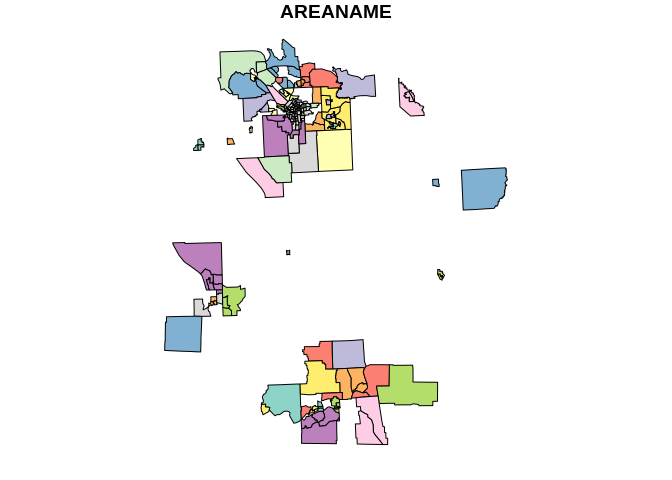

The goal of lazysf is to provide interactive delayed read of GDAL vector data sources.
Vector data sources (a.k.a. “shapefiles”) are files or web services or databases that provide tables of data fields. These fields may include spatial geometry data (i.e. points, lines, polygons, and other planar types composed of coordinate paths).
lazysf uses the dplyr/dbplyr ‘tbl_lazy’ mechanism by providing a GDAL-backend like many database packages in R. The convenience function lazysf() provides a single-argument wrapper around the database-like workflows.
See it in action!
library(lazysf) library(sf) library(dplyr) url <- "https://github.com/Nowosad/spData/raw/master/inst/shapes/NY8_bna_utm18.gpkg" (x <- lazysf(url)) #> # Source: table<sf_bna2_utm18> [?? x 13] #> # Database: SFSQLConnection #> AREAKEY AREANAME X Y POP8 TRACTCAS PROPCAS PCTOWNHOME PCTAGE65P #> <chr> <chr> <dbl> <dbl> <dbl> <dbl> <dbl> <dbl> <dbl> #> 1 360070… Bingham… 4.07 -67.4 3540 3.08 8.70e-4 0.328 0.147 #> 2 360070… Bingham… 4.64 -66.9 3560 4.08 1.15e-3 0.427 0.235 #> 3 360070… Bingham… 5.71 -67.0 3739 1.09 2.92e-4 0.338 0.138 #> 4 360070… Bingham… 7.61 -66.0 2784 1.07 3.84e-4 0.462 0.119 #> 5 360070… Bingham… 7.32 -67.3 2571 3.06 1.19e-3 0.192 0.142 #> 6 360070… Bingham… 8.56 -66.9 2729 1.06 3.88e-4 0.365 0.141 #> 7 360070… Bingham… 9.21 -67.2 3952 2.09 5.29e-4 0.666 0.231 #> 8 360070… Bingham… 10.2 -66.9 993 0.02 2.00e-5 0.667 0.279 #> 9 360070… Bingham… 8.70 -68.3 1908 2.04 1.07e-3 0.459 0.172 #> 10 360070… Bingham… 7.40 -68.1 948 0.02 2.10e-5 0.166 0.179 #> # … with more rows, and 4 more variables: Z <dbl>, AVGIDIST <dbl>, #> # PEXPOSURE <dbl>, geom <MULTIPOLYGON [m]> x %>% distinct(AREANAME) %>% arrange(AREANAME) #> # Source: lazy query [?? x 1] #> # Database: SFSQLConnection #> # Ordered by: AREANAME #> AREANAME #> <chr> #> 1 <NA> #> 2 Auburn city #> 3 Baldwinsville village #> 4 Barker town #> 5 Bayberry-Lynelle Mead #> 6 Binghamton city #> 7 Binghamton town #> 8 Brookfield town #> 9 Camillus village #> 10 Canastota village #> # … with more rows plot(st_as_sf(x %>% dplyr::filter(!(AREANAME %LIKE% "Ca%" | AREANAME %LIKE% "Bi%")) %>% dplyr::select(AREANAME, geom)))

These are big promises! It’s very largely format dependent.
We make no claims about performance or convenience, it will be affected by your system and your sf installation - lazysf just takes you closer the GDAL capabilities.
For example, a query on a CSV, GeoJSON, or KML file local or remote is entirely subject to the performance of the matching GDAL driver.
_ogr_geometry_, other non-DB formats like ESRI’s geodatabase have other names like SHAPE
When using dplyr verbs (filter(), select(), mutate(), transmute(), arrange(), left_join(), …) we are also subject to the rules of SQL translation. There are no specific ones provided by lazysf but that might change.
Wrappers around lazysf could provide more specific tools for particular formats.
Yes (actually that is what lazysf uses) but with sf alone you get a fully materialized sf data frame, so you better get that query right first time!
With lazysf you get some control over intermediate steps, potentially expensive queries will only be run for a preview of the data until you are ready to fetch it.
You can install the dev version of lazysf from GitHub with:
remotes::install_github("mdsumner/lazysf")
This is a basic example.
library(lazysf) f <- system.file("gpkg/nc.gpkg", package = "sf", mustWork = TRUE) ## specify only the data source lazysf(f) #> # Source: table<nc.gpkg> [?? x 15] #> # Database: SFSQLConnection #> AREA PERIMETER CNTY_ CNTY_ID NAME FIPS FIPSNO CRESS_ID BIR74 SID74 NWBIR74 #> <dbl> <dbl> <dbl> <dbl> <chr> <chr> <dbl> <int> <dbl> <dbl> <dbl> #> 1 0.114 1.44 1825 1825 Ashe 37009 37009 5 1091 1 10 #> 2 0.061 1.23 1827 1827 Alle… 37005 37005 3 487 0 10 #> 3 0.143 1.63 1828 1828 Surry 37171 37171 86 3188 5 208 #> 4 0.07 2.97 1831 1831 Curr… 37053 37053 27 508 1 123 #> 5 0.153 2.21 1832 1832 Nort… 37131 37131 66 1421 9 1066 #> 6 0.097 1.67 1833 1833 Hert… 37091 37091 46 1452 7 954 #> 7 0.062 1.55 1834 1834 Camd… 37029 37029 15 286 0 115 #> 8 0.091 1.28 1835 1835 Gates 37073 37073 37 420 0 254 #> 9 0.118 1.42 1836 1836 Warr… 37185 37185 93 968 4 748 #> 10 0.124 1.43 1837 1837 Stok… 37169 37169 85 1612 1 160 #> # … with more rows, and 4 more variables: BIR79 <dbl>, SID79 <dbl>, #> # NWBIR79 <dbl>, geom <MULTIPOLYGON [°]> ## specify the data source and a query to run lazysf(f, query = "SELECT AREA, FIPS, geom FROM \"nc.gpkg\" WHERE AREA < 0.1") #> # Source: SQL [?? x 3] #> # Database: SFSQLConnection #> AREA FIPS geom #> <dbl> <chr> <MULTIPOLYGON [°]> #> 1 0.061 37005 (((-81.23989 36.36536, -81.24069 36.37942, -81.26284 36.40504, -… #> 2 0.07 37053 (((-76.00897 36.3196, -76.01735 36.33773, -76.03288 36.33598, -7… #> 3 0.097 37091 (((-76.74506 36.23392, -76.98069 36.23024, -76.99475 36.23558, -… #> 4 0.062 37029 (((-76.00897 36.3196, -75.95718 36.19377, -75.98134 36.16973, -7… #> 5 0.091 37073 (((-76.56251 36.34057, -76.60424 36.31498, -76.64822 36.31532, -… #> 6 0.072 37181 (((-78.49252 36.17359, -78.51472 36.17522, -78.51709 36.46148, -… #> 7 0.053 37139 (((-76.29893 36.21423, -76.32423 36.23362, -76.37242 36.25235, -… #> 8 0.081 37189 (((-81.80622 36.10456, -81.81715 36.10939, -81.82231 36.15786, -… #> 9 0.063 37143 (((-76.48053 36.07979, -76.53696 36.08792, -76.5756 36.10266, -7… #> 10 0.044 37041 (((-76.68874 36.29452, -76.64822 36.31532, -76.60424 36.31498, -… #> # … with more rows ## specify the data source and the table/layer to access lazysf(f, layer = "nc.gpkg") %>% dplyr::select(AREA, FIPS, geom) %>% dplyr::filter(AREA < 0.1) #> # Source: lazy query [?? x 3] #> # Database: SFSQLConnection #> AREA FIPS geom #> <dbl> <chr> <MULTIPOLYGON [°]> #> 1 0.061 37005 (((-81.23989 36.36536, -81.24069 36.37942, -81.26284 36.40504, -… #> 2 0.07 37053 (((-76.00897 36.3196, -76.01735 36.33773, -76.03288 36.33598, -7… #> 3 0.097 37091 (((-76.74506 36.23392, -76.98069 36.23024, -76.99475 36.23558, -… #> 4 0.062 37029 (((-76.00897 36.3196, -75.95718 36.19377, -75.98134 36.16973, -7… #> 5 0.091 37073 (((-76.56251 36.34057, -76.60424 36.31498, -76.64822 36.31532, -… #> 6 0.072 37181 (((-78.49252 36.17359, -78.51472 36.17522, -78.51709 36.46148, -… #> 7 0.053 37139 (((-76.29893 36.21423, -76.32423 36.23362, -76.37242 36.25235, -… #> 8 0.081 37189 (((-81.80622 36.10456, -81.81715 36.10939, -81.82231 36.15786, -… #> 9 0.063 37143 (((-76.48053 36.07979, -76.53696 36.08792, -76.5756 36.10266, -7… #> 10 0.044 37041 (((-76.68874 36.29452, -76.64822 36.31532, -76.60424 36.31498, -… #> # … with more rows ## above was a real database (Geopackage), now with an actual shapefile shp <- lazysf(system.file("shape/nc.shp", package = "sf", mustWork = TRUE)) library(dplyr) shp %>% filter(NAME %LIKE% 'A%') %>% mutate(abc = 1.3) %>% select(abc, NAME, `_ogr_geometry_`) %>% arrange(desc(NAME)) #%>% show_query() #> # Source: lazy query [?? x 3] #> # Database: SFSQLConnection #> # Ordered by: desc(NAME) #> abc NAME `_ogr_geometry_` #> <dbl> <chr> <POLYGON [°]> #> 1 1.3 Avery ((-81.94135 35.95498, -81.9614 35.93922, -81.94495 35.91861, -… #> 2 1.3 Ashe ((-81.47276 36.23436, -81.54084 36.27251, -81.56198 36.27359, … #> 3 1.3 Anson ((-79.91995 34.80792, -80.32528 34.81476, -80.27512 35.19311, … #> 4 1.3 Allegha… ((-81.23989 36.36536, -81.24069 36.37942, -81.26284 36.40504, … #> 5 1.3 Alexand… ((-81.10889 35.7719, -81.12728 35.78897, -81.1414 35.82332, -8… #> 6 1.3 Alamance ((-79.24619 35.86815, -79.23799 35.83725, -79.54099 35.83699, …
Online sources can also work if your build of sf supports.
# online sources can work geojson <- file.path("https://raw.githubusercontent.com/SymbolixAU", "geojsonsf/master/inst/examples/geo_melbourne.geojson") lazysf(geojson) #> # Source: table<geo_melbourne> [?? x 8] #> # Database: SFSQLConnection #> SA2_NAME polygonId SA3_NAME AREASQKM fillColor strokeColor strokeWeight #> <chr> <int> <chr> <dbl> <chr> <chr> <int> #> 1 Abbotsf… 70 Yarra 1.74 #440154 #440154 1 #> 2 Albert … 59 Port Ph… 4.67 #450457 #450457 1 #> 3 Alphing… 41 Darebin… 2.89 #46075A #46075A 1 #> 4 Armadale 66 Stonnin… 2.18 #460A5D #460A5D 1 #> 5 Ascot V… 44 Essendon 3.84 #460C5F #460C5F 1 #> 6 Brunswi… 36 Brunswi… 5.14 #472D7B #472D7B 1 #> 7 Brunswi… 37 Brunswi… 2.17 #472D7B #472D7B 1 #> 8 Brunswi… 38 Brunswi… 3.18 #472E7C #472E7C 1 #> 9 Carlton 48 Melbour… 1.82 #443A83 #443A83 1 #> 10 Carlton… 71 Yarra 2.30 #443A83 #443A83 1 #> # … with more rows, and 1 more variable: `_ogr_geometry_` <POLYGON [°]>
Also works on PostgreSQL with spatial PostGIS (or just normal postgres).
Note that the connection object is a transparent string so take care with your credentials and don’t share in public (currently trying to work out if only the externalptr should be kept in this, or in all cases with GDAL sources).
The SFSQL_PG() driver is a convenience wrapper around the SFSQL() driver.
con <- dbConnect(SFSQL_PG(), host = Sys.getenv("dbedu_host"), dbname = Sys.getenv("dbedu_dbname"), user = Sys.getenv("dbedu_usr"), password = Sys.getenv("dbedu_pwd")) (sfx <- lazysf(con, query = "SELECT st_area(st_transform(geom, '+proj=laea +lon_0=-68 +lat_0=-25')) / 1e6 AS sq_km, codigo_comuna, geom FROM mapa_comunas WHERE codigo_region = '03'")) #> # Source: SQL [?? x 3] #> # Database: SFSQLConnection #> sq_km codigo_comuna geom #> <dbl> <chr> <MULTIPOLYGON [°]> #> 1 18991. 03202 (((-68.36698 -26.79685, -68.36946 -26.79951, -68.38041 -… #> 2 17789. 03101 (((-68.36698 -26.79685, -68.36379 -26.80107, -68.34811 -… #> 3 7228. 03301 (((-70.07472 -28.15016, -70.07486 -28.15708, -70.07754 -… #> 4 3223. 03303 (((-71.57305 -29.02126, -71.56807 -29.02501, -71.56409 -… #> 5 6158. 03302 (((-69.69013 -28.59016, -69.6956 -28.59591, -69.69542 -2… #> 6 5773. 03201 (((-70.68641 -26.15053, -70.68303 -26.15132, -70.67828 -… #> 7 3680. 03102 (((-70.9699 -27.24161, -70.97552 -27.2499, -70.9782 -27.… #> 8 1601. 03304 (((-71.14553 -27.96365, -71.13859 -27.96908, -71.12689 -… #> 9 11260. 03103 (((-68.98753 -27.52457, -68.98356 -27.53234, -68.97817 -…
You can construct the database connection string yourself and provide it directly to lazysf() if you want. See GDAL Postgres for details on this format, and this capability is available for any of the GDAL formats (see limitations above).
Please note that the lazysf project is released with a Contributor Code of Conduct. By contributing to this project, you agree to abide by its terms.